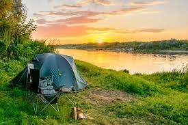

Camping
Blogs- camping, June 9, 2021

Camping is an outdoor activity involving overnight stays away from home with or without a shelter, such as a tent or a recreational vehicle. Typically participants leave developed areas to spend time outdoors in more natural ones in pursuit of activities providing them enjoyment. The night (or more) spent outdoors distinguishes camping from day-tripping, picnicking, and other similarly short-term recreational activities.
Camping as a recreational activity became popular among elites in the early 20th century. With time, it grew in popularity among other socioeconomic classes. Modern campers frequent publicly owned natural resources such as national and state parks, wilderness areas, and commercial campgrounds. Camping is a key part of many youth organizations around the world, such as Scouting, which use it to teach both self-reliance and teamwork.
History!
History of camping, Nov 2, 2020

The history of recreational camping is often traced back to Thomas Hiram Holding, a British travelling tailor, but it was actually first popularized in the UK on the river Thames. By the 1880s large numbers of visitors took part in the pastime, which was connected to the late Victorian craze for pleasure boating. The early camping equipment was very heavy, so it was convenient to transport it by boat or to use craft that converted into tents. Although Thomas Hiram Holding is often seen as the father of modern camping in the UK, he was responsible for popularising a different type of camping in the early twentieth century. He experienced the activity in the wild from his youth, when he had spent much time with his parents traveling across the American prairies. Later he embarked on a cycling and camping tour with some friends across Ireland. His book on his Ireland experience, Cycle and Camp in Connemara led to the formation of the first camping group in 1901, the Association of Cycle Campers, later to become the Camping and Caravanning Club. He wrote The Campers Handbook in 1908, so that he could share his enthusiasm for the great outdoors with the world. The International Federation of Camping Clubs (Federation Internationale de Camping et de Caravanning) was founded in 1932 with national clubs from all over the world affiliating with it. By the 1960s camping had become an established family holiday standard and today camp sites are ubiquitous across Europe a
Equipment for hiking
- Tent, lean-to, or other form of shelter
- Sleeping bag and/or blankets for warmth
- Lantern or flashlight
- Hatchet, axe and hammer or multi-Tool or knife
- Fire starter for starting a campfire
- Raincoat or poncho and Hiking boots
- Personal care products and towel
- Cooking implements
- Emergency Preparedness Kit
- Global Positioning System (GPS)